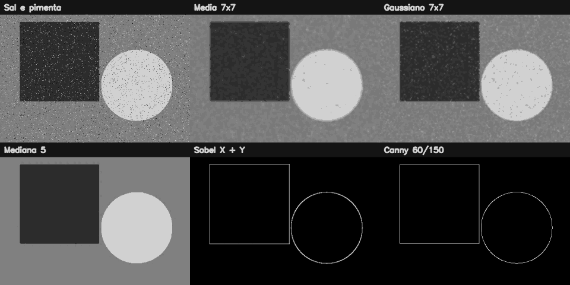

3. Filtragem, convolução e detecção de bordas¶
O que você aprenderá¶
Neste capítulo, deixamos de modificar principalmente a posição dos pixels e passamos a recalcular seus valores usando a vizinhança. Essa mudança é central: filtros espaciais, suavização, realce, gradientes e detectores de bordas aparecem em praticamente todo pipeline clássico de processamento de imagens.
Ao final, você deverá conseguir:
- explicar o que é vizinhança de um pixel;
- compreender o papel de um kernel;
- interpretar convolução/correlação espacial;
- criar kernels manualmente;
- diferenciar média, Gaussiano, mediana e bilateral;
- relacionar diferentes filtros a diferentes modelos de ruído;
- compreender por que bordas correspondem a mudanças de intensidade;
- calcular Sobel X e Sobel Y;
- entender por que derivadas exigem tipo com sinal;
- combinar componentes de gradiente;
- explicar as etapas do detector de Canny;
- escolher limiares de Canny de modo consciente;
- reconhecer o efeito do tamanho do kernel;
- evitar perda de informação por conversão prematura para
uint8.
A filtragem espacial é uma operação fundamental em processamento digital de imagens (GONZALEZ; WOODS, 2010). Em visão computacional, gradientes e estruturas locais também aparecem como base de métodos de descrição e detecção (SZELISKI, 2022).
3.1 A ideia central: um pixel passa a “consultar os vizinhos”¶
Nos capítulos anteriores, muitas operações podiam ser interpretadas como mudanças de posição ou seleção de regiões. Agora, o novo valor de um pixel será calculado a partir dos valores ao seu redor.
Analogia: votação em um condomínio¶
Imagine que cada apartamento precisa decidir uma temperatura comum para o corredor. Uma estratégia é pedir a opinião de apartamentos vizinhos. Alguns votos podem valer mais do que outros. O kernel define quais vizinhos participam e qual é o peso de cada voto.
3.2 O que é um kernel?¶
Um kernel é uma pequena matriz de coeficientes, normalmente de tamanho ímpar, como 3 × 3, 5 × 5 ou 7 × 7.
Exemplo de kernel de média 3 × 3:
O kernel é deslocado sobre a imagem. Em cada posição, os pixels cobertos são multiplicados pelos pesos correspondentes e os produtos são somados.
De forma simplificada:
(GONZALEZ; WOODS, 2010).
3.3 Exemplo numérico pequeno¶
Considere a vizinhança:
Com média 3 × 3:
O valor extremo 250 é espalhado pela vizinhança. Isso explica por que o filtro de média suaviza, mas também pode borrar detalhes.
3.4 Aplicando um kernel manual com filter2D¶
Exemplo 1 — média manual¶
import cv2
import numpy as np
kernel = np.ones((3, 3), dtype=np.float32) / 9.0
suavizada = cv2.filter2D(
imagem,
ddepth=-1,
kernel=kernel
)
ddepth=-1 solicita que a saída preserve o tipo da entrada.
3.5 Filtro de média¶
O filtro de média atribui pesos iguais aos vizinhos.
Quando ele ajuda?¶
- ruído leve;
- suavização simples;
- demonstrações didáticas.
Limitação¶
Ele não distingue ruído de borda. Assim, mistura pixels dos dois lados de uma fronteira.
Analogia: misturar tintas próximas¶
Se você passa um pincel molhado sobre uma divisão entre azul e amarelo, surge uma faixa de mistura. O filtro de média faz algo semelhante numericamente.
3.6 Filtro Gaussiano¶
No filtro Gaussiano, os pixels mais próximos do centro recebem pesos maiores.
Ele é particularmente útil quando o ruído pode ser aproximado por variações distribuídas ao redor do valor verdadeiro (GONZALEZ; WOODS, 2010).
Analogia: opinião ponderada por proximidade¶
Em vez de perguntar igualmente para toda a rua, você considera mais a opinião dos vizinhos que moram mais perto.
3.7 Tamanho do kernel e sigma¶
Um kernel maior considera uma região espacial maior.
No Gaussiano, sigma controla a dispersão dos pesos.
Maior não significa melhor
Aumentar o kernel reduz detalhes junto com o ruído. O parâmetro deve ser compatível com o tamanho das estruturas que você deseja preservar.
3.8 Filtro de mediana¶
A mediana não calcula uma soma ponderada. Ela ordena os valores e escolhe o valor central.
Exemplo numérico¶
Ordenando:
A mediana é 10.
O valor extremo 255 praticamente não influencia o resultado.
Quando usar?¶
É especialmente eficaz para ruído impulsivo, como sal e pimenta.
3.9 Ruído sal e pimenta¶
Esse ruído insere pixels muito claros e muito escuros de forma isolada.
Exemplo 2 — criando ruído didático¶
ruidosa = imagem.copy()
rng = np.random.default_rng(42)
quantidade = 2000
ys = rng.integers(0, imagem.shape[0], quantidade)
xs = rng.integers(0, imagem.shape[1], quantidade)
ruidosa[ys[:1000], xs[:1000]] = 255
ruidosa[ys[1000:], xs[1000:]] = 0
Agora compare média e mediana.
3.10 Filtro bilateral¶
O bilateral considera duas proximidades:
- distância espacial;
- diferença de intensidade/cor.
Pixels espacialmente próximos, mas muito diferentes em intensidade, influenciam menos uns aos outros. Isso ajuda a preservar bordas.
Analogia: vizinhos com opiniões parecidas¶
O filtro considera não apenas quem mora perto, mas também quem possui uma “opinião” de intensidade semelhante.
O custo computacional tende a ser maior que filtros lineares simples.
3.11 Comparando filtros¶
| Filtro | Natureza | Boa escolha para | Limitação |
|---|---|---|---|
| média | linear | suavização simples | borra bordas |
| Gaussiano | linear | ruído aproximadamente Gaussiano | ainda mistura fronteiras |
| mediana | não linear | sal e pimenta | custo maior |
| bilateral | não linear | suavizar preservando bordas | mais caro |
3.12 Realce com kernel¶
Nem todo kernel suaviza.
Exemplo de realce:
kernel_realce = np.array([
[0, -1, 0],
[-1, 5, -1],
[0, -1, 0]
], dtype=np.float32)
realcada = cv2.filter2D(
imagem,
-1,
kernel_realce
)
O peso positivo central preserva/reforça o pixel, enquanto os vizinhos são subtraídos.
3.13 O que é uma borda?¶
Uma borda é uma região em que a intensidade muda rapidamente.
Considere uma linha:
Entre 20 e 220 existe uma grande mudança. A derivada será intensa nessa região.
Segundo Gonzalez e Woods (2010), operadores de derivada são ferramentas clássicas para detectar descontinuidades de intensidade.
3.14 Sobel X e Sobel Y¶
O Sobel estima derivadas em duas direções.
sobel_x = cv2.Sobel(
cinza,
cv2.CV_64F,
1,
0,
ksize=3
)
sobel_y = cv2.Sobel(
cinza,
cv2.CV_64F,
0,
1,
ksize=3
)
- derivada em
x: destaca mudanças ao longo do eixo horizontal e, portanto, bordas aproximadamente verticais; - derivada em
y: destaca mudanças ao longo do eixo vertical e, portanto, bordas aproximadamente horizontais.
3.15 Por que não calcular Sobel diretamente em uint8?¶
Uma derivada pode ser negativa.
Exemplo:
uint8 não representa números negativos.
Por isso:
Depois podemos visualizar a magnitude:
Converter cedo demais perde informação
Se você força a derivada negativa para uint8 antes de tratar seu sinal, pode apagar parte relevante do gradiente.
3.16 Magnitude do gradiente¶
Podemos combinar as duas componentes:
magnitude = cv2.magnitude(
sobel_x.astype(np.float32),
sobel_y.astype(np.float32)
)
magnitude_vis = cv2.convertScaleAbs(magnitude)
A direção do gradiente também pode ser calculada com atan2.
3.17 Detector de Canny¶
O Canny procura bordas finas e conectadas usando uma sequência de etapas (SZELISKI, 2022):
- suavização para reduzir ruído;
- cálculo do gradiente;
- supressão de não máximos;
- aplicação de dois limiares;
- histerese para conectar bordas fracas a fortes.
Analogia: investigar uma estrada¶
- borda forte: estrada claramente visível;
- borda fraca conectada a uma forte: provavelmente continuação da estrada;
- borda fraca isolada: pode ser ruído.
3.18 Exemplo de Canny¶
cinza = cv2.cvtColor(imagem, cv2.COLOR_BGR2GRAY)
suave = cv2.GaussianBlur(
cinza,
(5, 5),
1.2
)
bordas = cv2.Canny(
suave,
60,
150
)
Os valores 60 e 150 são limiares didáticos, não números universais.
3.19 Como os limiares afetam o Canny?¶
Limiar baixo demais:
- muitas bordas;
- mais ruído;
- contornos fragmentados por detalhes irrelevantes.
Limiar alto demais:
- poucas bordas;
- estruturas fracas desaparecem.
Uma escolha adequada depende do contraste e da aplicação.
3.20 Efeito das bordas da própria imagem¶
Quando o kernel chega à borda, parte da vizinhança ficaria fora da imagem. O OpenCV precisa criar valores artificiais usando estratégias como reflexão, repetição ou constante.
Esse detalhe pode alterar resultados perto das extremidades.
Exemplo 3¶
3.21 Exemplo integrado do capítulo¶
O código completo do capítulo 3 cria uma cena sintética, adiciona ruído e compara várias estratégias.
Pipeline:
imagem limpa
↓
ruído sal e pimenta
↓
media / Gaussiano / mediana / bilateral
↓
Sobel X e Y
↓
magnitude
↓
Canny
↓
painel comparativo

3.22 Erros comuns¶
| Sintoma | Causa provável | Correção |
|---|---|---|
| imagem excessivamente borrada | kernel grande | reduza tamanho/sigma |
| sal e pimenta continua evidente | filtro inadequado | teste mediana |
| bordas negativas desapareceram | uso prematuro de uint8 |
calcule em CV_32F/CV_64F |
| Canny detecta tudo | limiares baixos/ruído | suavize e ajuste limiares |
| Canny não detecta quase nada | limiares altos | reduza-os |
| bilateral muito lento | parâmetros grandes | reduza vizinhança ou use outro filtro |
| detalhe fino desaparece | suavização excessiva | ajuste escala do filtro |
3.23 Perguntas de revisão¶
- O que é um kernel?
- O que significa “deslizar” o kernel sobre a imagem?
- Por que o filtro de média borra bordas?
- Por que a mediana lida bem com ruído impulsivo?
- Qual diferença conceitual existe entre Gaussiano e bilateral?
- O que uma derivada representa em uma imagem?
- Por que Sobel X costuma destacar bordas verticais?
- Por que precisamos de um tipo com sinal?
- Para que serve a supressão de não máximos do Canny?
- Qual o papel dos dois limiares?
Exercícios de fixação¶
Parte A — kernels¶
Exercício 1¶
Crie manualmente kernels de média 3 × 3, 5 × 5 e 9 × 9. Compare o efeito.
Exercício 2¶
Crie uma imagem com uma faixa branca em fundo preto e aplique um kernel de realce.
Exercício 3¶
Explique por que a soma dos coeficientes de um kernel de média é 1.
Exercício 4¶
Crie um kernel cuja soma seja 0 e aplique-o em uma região de intensidade constante. O que acontece?
Parte B — ruído¶
Exercício 5¶
Gere ruído sal e pimenta e compare média, Gaussiano e mediana.
Exercício 6¶
Gere ruído Gaussiano com NumPy e compare os mesmos filtros. Qual comportamento mudou?
Exercício 7¶
Aplique bilateral e Gaussiano a uma imagem com bordas fortes. Compare visualmente a preservação das fronteiras.
Parte C — gradientes¶
Exercício 8¶
Crie uma imagem com listras verticais e horizontais. Compare Sobel X e Y.
Exercício 9¶
Imprima valores mínimos e máximos do Sobel em CV_64F. Mostre que existem valores negativos.
Exercício 10¶
Calcule a magnitude do gradiente com cv2.magnitude.
Parte D — Canny¶
Exercício 11¶
Execute Canny com três pares de limiares e conte pixels de borda com np.count_nonzero.
Exercício 12¶
Aplique Canny antes e depois do Gaussiano. Compare a quantidade de componentes desconectados.
Exercício 13¶
Construa uma função que receba imagem, tamanho de kernel e limiares e gere automaticamente um painel comparativo.
Síntese¶
A filtragem espacial transforma um pixel a partir de seu contexto. Kernels de suavização reduzem variações indesejadas; filtros de realce aumentam diferenças; operadores de derivada tornam mudanças visíveis; e o Canny combina várias etapas para produzir bordas mais finas e coerentes. A escolha de parâmetros deve sempre considerar a escala do ruído e a escala das estruturas que precisam ser preservadas.
Referências¶
BRADSKI, Gary; KAEHLER, Adrian. Learning OpenCV: Computer Vision with the OpenCV Library. Sebastopol: O'Reilly Media, 2008.
GONZALEZ, Rafael C.; WOODS, Richard E. Processamento Digital de Imagens. 3. ed. São Paulo: Pearson, 2010.
SZELISKI, Richard. Computer Vision: Algorithms and Applications. 2. ed. Cham: Springer, 2022.